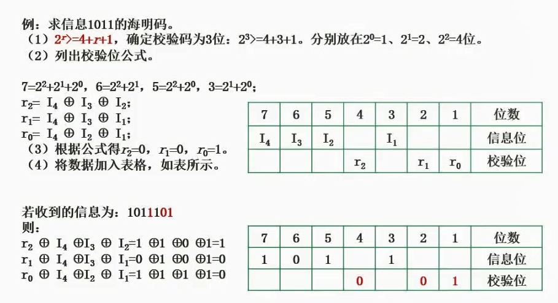
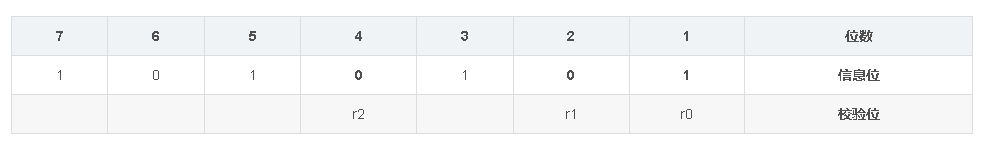
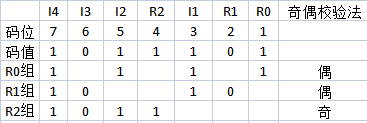
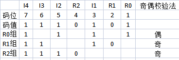
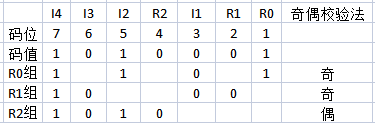

2.21 海明校验码

校验位
位于信息编码2^n位置
假设只有1个信息位，这个编码会有多长？
由于1（2^0），2（2^1）都是校验位，信息位只能放3这里，那么这个编码就是3位。
通用公式
2^r >= m + r+ 1
其中m为数据位长度，r为最小校验位数量。
例子
求信息1011的海明码
求校验码位数。
- 信息位=4，那么代入公式
2^r>=5+r - 尝试2，
4>=7不成立 - 尝试3，
8>=8成立 - 得出校验码位数=3
- 信息位=4，那么代入公式
然后画表格
如上图，把位数按顺序标好。
然后把校验位按顺序（用下标）填充上去
最后把1011按按顺序（用下标）填充上去，得到下图。
判断每个信息位受哪些校验位影响
- I4所在的7号位，
7=2^2+2^1+2^0，那么I4受R2,R1,R0影响。 - I3所在的6号位，
6=2^2+2^1，那么I3受R2,R1影响。 - I2所在的5号位，
5=2^2+2^0，那么I2受R2,R0影响。 - I1所在的3号位，
3=2^1+2^0，那么I1受R1,R0影响。
- I4所在的7号位，
- 以校验码维度汇总
- R2（I4,I3,I2）
- R1（I4,I3,I1）
- R0（I4,I2,I1）
- 将对应信息码异或计算
- R2 = 1 ⊕ 0 ⊕ 1 = 0
- R1 = 1 ⊕ 0 ⊕ 1 = 0
- R0 = 1 ⊕ 1 ⊕ 1 = 1
- 得到海明码
1010101

海明码是如何纠错的
当传输了一个1011101，怎么判断哪里错了呢
检错流程
- 此处传输的校验位
R2=1,R1=0,R0=1I4=1,I3=0,I2=1,I1=1
- 判断每个信息位受哪些校验位影响
- I4所在的7号位，
7=2^2+2^1+2^0，那么I4受R2,R1,R0影响。 - I3所在的6号位，
6=2^2+2^1，那么I3受R2,R1影响。 - I2所在的5号位，
5=2^2+2^0，那么I2受R2,R0影响。 - I1所在的3号位，
3=2^1+2^0，那么I1受R1,R0影响。
- I4所在的7号位，
- 以校验码维度汇总
- R2（I4,I3,I2）
- R1（I4,I3,I1）
- R0（I4,I2,I1）
和传输过来的检验位异或判断
- R2： R2⊕ I4⊕ I3⊕ I2 = 1⊕1⊕0⊕1=0（有误）
- R1： R1⊕ I4⊕ I3⊕ I1 = 0⊕1⊕0⊕1=1（正确）
- R0： R0⊕ I4⊕ I2⊕ I1 = 1⊕1⊕1⊕1=1（正确）
得知该海明码有误。
纠错流程
海明码1011101

列表算奇数位，发现只有一组有异常的。说明是R2检验位有问题，取反即可。
海明码1110101

同理，判断出R1，R2检验码均检测有误。
仅有他们检验的信息位是I3，取反即纠正。
海明码1010001

同理，判断出R0，R1检验码均检测有误。
仅有他们检验的信息位是I1，取反即纠正。